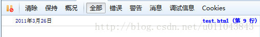
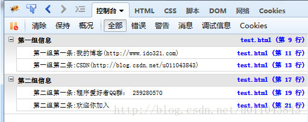
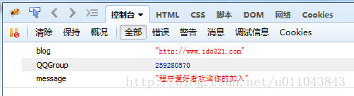
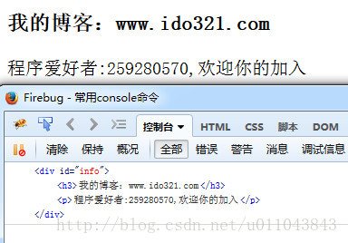
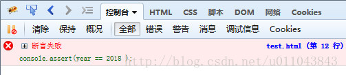
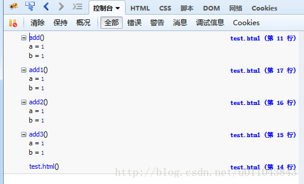
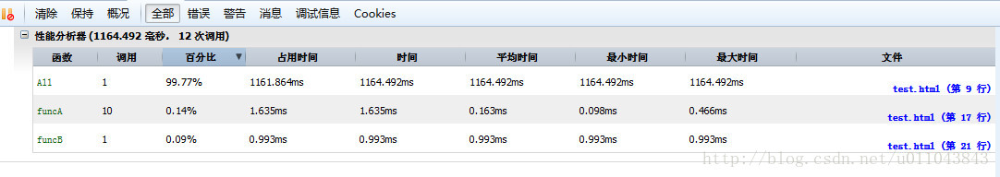

投稿：hebedich 字体：[增加 减小] 类型：转载 时间：2014-10-21 我要评论
这篇文章主要介绍了js调试工具Console命令详解,需要的朋友可以参考下
一、显示信息的命令
<!DOCTYPE html>
<html>
<head>
<title>常用console命令</title>
<meta http-equiv="Content-Type" content="text/html; charset=utf-8" />
</head>
<body>
<script type="text/javascript">
console.log('hello');
console.info('信息');
console.error('错误');
console.warn('警告');
</script>
</body>
</html>
最常用的就是console.log了。
二：占位符
console上述的集中度支持printf的占位符格式，支持的占位符有：字符（%s）、整数（%d或%i）、浮点数（%f）和对象（%o）
<script type="text/javascript">
console.log("%d年%d月%d日",2011,3,26);
</script>
效果：

三、信息分组
<!DOCTYPE html>
<html>
<head>
<title>常用console命令</title>
<meta http-equiv="Content-Type" content="text/html; charset=utf-8" />
</head>
<body>
<script type="text/javascript">
console.group("第一组信息");
console.log("第一组第一条:我的XX(http://www.jb51.net)");
console.log("第一组第二条:xxx(http://jb51.net)");
console.groupEnd();
console.group("第二组信息");
console.log("第二组第一条:程序爱好者QQ群： 80535344");
console.log("第二组第二条:欢迎你加入");
console.groupEnd();
</script>
</body>
</html>

四、查看对象的信息
console.dir()可以显示一个对象所有的属性和方法。
<script type="text/javascript">
var info = {
blog:"
http://www.jb51.net",
QQGroup:80535344,
message:"程序爱好者欢迎你的加入"
};
console.dir(info);
</script>

五、显示某个节点的内容
console.dirxml()用来显示网页的某个节点（node）所包含的html/xml代码。
<!DOCTYPE html>
<html>
<head>
<title>常用console命令</title>
<meta http-equiv="Content-Type" content="text/html; charset=utf-8" />
</head>
<body>
<div id="info">
<h3>我的博客：
www.ido321.com</h3>
<p>程序爱好者:259280570,欢迎你的加入</p>
</div>
<script type="text/javascript">
var info = document.getElementById('info');
console.dirxml(info);
</script>
</body>
</html>

六、判断变量是否是真
console.assert()用来判断一个表达式或变量是否为真。如果结果为否，则在控制台输出一条相应信息，并且抛出一个异常。
<script type="text/javascript">
var result = 1;
console.assert( result );
var year = 2014;
console.assert(year == 2018 );
</script>
1是非0值，是真；而第二个判断是假，在控制台显示错误信息

七、追踪函数的调用轨迹。
console.trace()用来追踪函数的调用轨迹。
<script type="text/javascript">
/*函数是如何被调用的，在其中加入console.trace()方法就可以了*/
function add(a,b){
console.trace();
return a+b;
}
var x = add3(1,1);
function add3(a,b){return add2(a,b);}
function add2(a,b){return add1(a,b);}
function add1(a,b){return add(a,b);}
</script>
控制台输出信息：

八、计时功能
console.time()和console.timeEnd()，用来显示代码的运行时间。
<script type="text/javascript">
console.time("控制台计时器一");
for(var i=0;i<1000;i++){
for(var j=0;j<1000;j++){}
}
console.timeEnd("控制台计时器一");
</script>
运行时间是38.84ms
九、console.profile()的性能分析
性能分析（Profiler）就是分析程序各个部分的运行时间，找出瓶颈所在，使用的方法是console.profile()。
<script type="text/javascript">
function All(){
alert(11);
for(var i=0;i<10;i++){
funcA(1000);
}
funcB(10000);
}
function funcA(count){
for(var i=0;i<count;i++){}
}
function funcB(count){
for(var i=0;i<count;i++){}
}
console.profile('性能分析器');
All();
console.profileEnd();
</script>
说明一下，LZ测试时，在All()中未加alert,控制条没有输出，加上了之后，就有了一张性能分析表，暂时不清楚原因，若你知道，可以评论。
